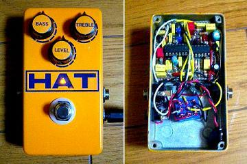

Modified BOSS AC-2
2007年12月03日 カテゴリー：自作エフェクター（アナログ）

BOSS AC-2 Acoustic Simulatorを簡略化したもので、PEDALE MANIAという海外のサイトにありました。簡略化したとはいえかなり複雑です。
▽回路図（入手できなくなったようなのでアップしておきます。2016年11月）
▽レイアウト
▽PCB（横58.4mm、縦53.3mm）
抵抗を立てまくってます。TL074が大きくて横に並ばなかったので、片方をソケットピンで高さを上げることでなんとか対処しました。
MXRサイズの限界に挑戦しています。ジャックとスイッチのあたりがかなりギリギリです。MIDはたいして変化を感じなかったのでMAXで固定しました。このままでは音量が下がってしまってたのでR23（120kΩ）を220kΩに変えてます。ついでにノイズ対策にC15（68pF）を100pFにしてみましたがたいして変わらないみたいです。組み込むとノイズは特に気にならない程度でした。
音はというと、結構アコギの雰囲気出てます。まぁ本物には到底及ばないんでしょうけど、ライブでは重宝しそうです。BASSをあまり上げずにエキサイター的な感じで使うのもアリですね。特にクリーンのコード弾きでは常にかけておきたい感じです。
今回写真ではシールの色の違いがわかりにくいです。でも現物は若干違います。どうも色を合わせるのは難しいです。
（2016年11月9日回路図・PCB追加）